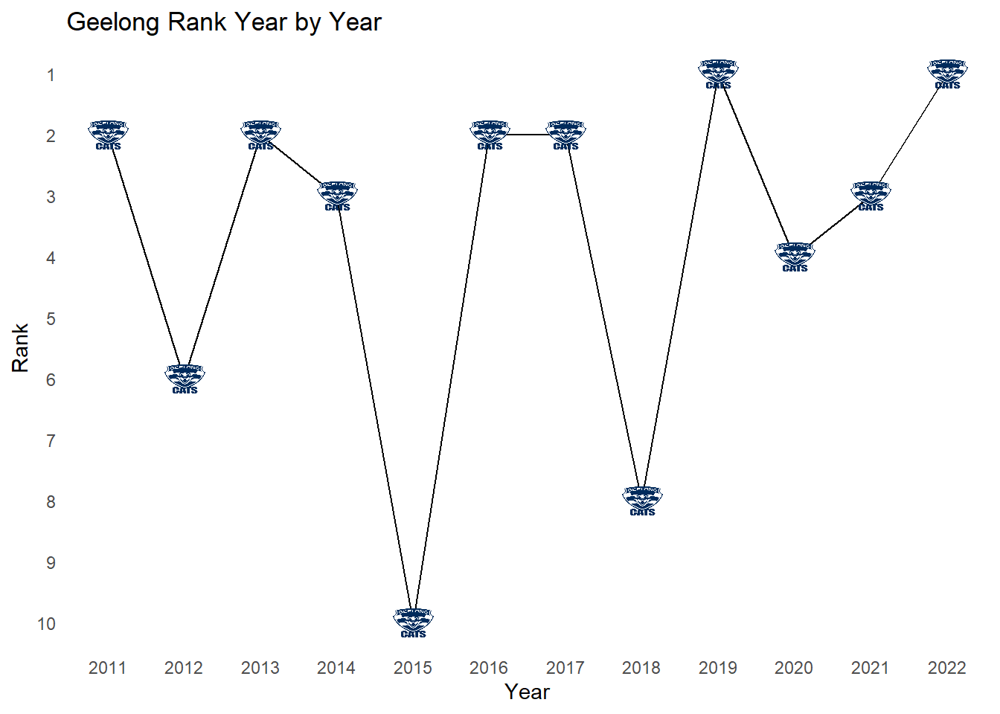
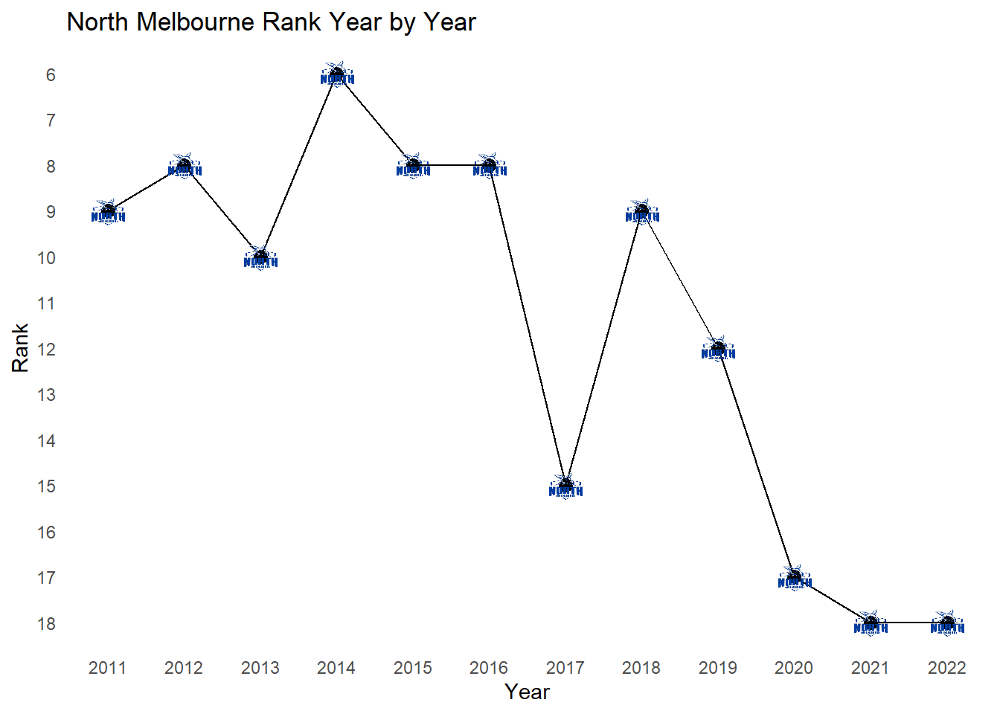
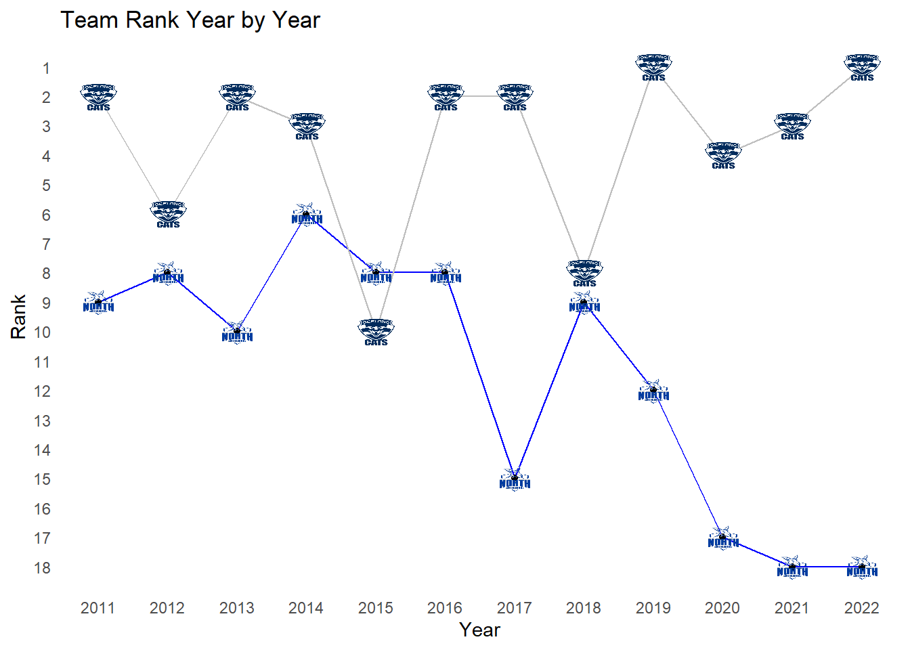
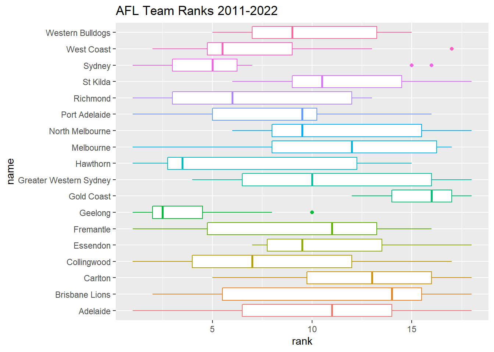

suppressWarnings({
suppressPackageStartupMessages(library(RPostgres))
suppressPackageStartupMessages(library(ggplot2))
suppressPackageStartupMessages(library(gt))
suppressPackageStartupMessages(library(dplyr))
suppressPackageStartupMessages(library(gtExtras))
suppressPackageStartupMessages(library(ggthemes))
suppressPackageStartupMessages(library(ghibli))
suppressPackageStartupMessages(library(ggthemes))
suppressPackageStartupMessages(library(ggimage))
suppressPackageStartupMessages(library(fitzRoy))
suppressPackageStartupMessages(library(tidyr))
})What is the Ladder?
Similar to the table in the Premier League, the ladder is the ranking system during the season for the AFL. In US terms, it is simply the standings. All 18 teams in the league are lumped together (no divisions or conferences) and each team is ranked by the number of points they’ve won throughout the season. A team gets 4 points for a win, 2 points for a tie/draw and 0 points for a loss. The top 8 teams after a 22 game season will get a chance to play in the finals. It is a fairly straightforward concept, so why dedicate an entire post to it?
Well beyond the interesting, and frankly much more descriptive term to denote rankings, I want to use this as an opportunity to look at how teams have done on a season by season basis. I want to know, How many points does a team typically need to shoot for to end up top of the ladder? What about at the other end? How does a team’s quality persist year to year? Do we have any dynasties? What about laughingstocks of the league?
This will be another fairly simplistic analytics post, but I once again think it is a great way to introduce data exploration for the true beginner. I truly do not know these answers. I lack the personal, cultural osmosis by which something like this might seep into my subconscious. So if you want to learn a little more about the above questions, let’s dig into the data and start unearthing some answers.
# Replace these placeholders with your actual PostgreSQL credentials
db_host <- "localhost"
db_name <- "AFL_data"
db_user <- "postgres"
db_password <- "Cincinnati1"
# Construct the connection string
con_string <- paste0("host=", db_host,
" dbname=", db_name,
" user=", db_user,
" password=", db_password)
# Establish the connection
con <- dbConnect(RPostgres::Postgres(), dbname = db_name, user = db_user,
password = db_password, host = db_host)
# Years range (update this based on your data)
start_year <- 2015
end_year <- 2022
# Create an empty list to store data frames
data_list <- list()
# Loop through each year
for (year in start_year:end_year) {
# Generate the table name for the specific year
table_name <- paste0("afl_results_", year)
# Fetch data from the table for the current year
query <- paste0("SELECT * FROM ", table_name)
data <- dbGetQuery(con, query)
# Append the data to the list
data_list[[year - start_year + 1]] <- data
}
# Combine data into one data frame
afl_results <- do.call(rbind, data_list)
# Years range (update this based on your data)
start_year <- 2011
end_year <- 2022
# Create an empty list to store data frames
data_ladder <- list()
# Loop through each year
for (year in start_year:end_year) {
# Generate the table name for the specific year
table_name <- paste0("afl_ladder_squiggle_", year)
# Fetch data from the table for the current year
query <- paste0("SELECT * FROM ", table_name)
data <- dbGetQuery(con, query)
data$year<-year
# Append the data to the list
data_ladder[[year - start_year + 1]] <- data
}
# Combine data into one data frame
afl_ladder <- do.call(rbind, data_ladder)The Ladder - 2022
Let’s start by taking a look at the final results for a single year. Below is a table for the 2022 season ordered from top to bottom. We can see the champion Geelong Cats put up 72 points with an 18-4 W/L record. The entire season only recorded a single draw between Fremantle and Richmond. Finally, our wooden spoon winner (the bottom of the table) was split between West Coast and North Melbourne with a measly 8 points; only 2 wins on the entire season! A 2-20 season is pretty dire, but let’s look across seasons to see how this compares to other years
AFL_logos<-read.csv("AFL_logos.csv")
ladder_2022<-afl_ladder%>%filter(year==2022)%>%left_join(AFL_logos,by=c('name'='Team_Name'))%>%select(rank,name,logo,played,pts,wins,losses,draws)
ladder_2022%>%gt()%>%gt_img_rows(columns=logo)| rank | name | logo | played | pts | wins | losses | draws |
|---|---|---|---|---|---|---|---|
| 1 | Geelong |  |
22 | 72 | 18 | 4 | 0 |
| 2 | Melbourne |  |
22 | 64 | 16 | 6 | 0 |
| 3 | Sydney |  |
22 | 64 | 16 | 6 | 0 |
| 4 | Collingwood |  |
22 | 64 | 16 | 6 | 0 |
| 5 | Fremantle |  |
22 | 62 | 15 | 6 | 1 |
| 6 | Brisbane Lions |  |
22 | 60 | 15 | 7 | 0 |
| 7 | Richmond |  |
22 | 54 | 13 | 8 | 1 |
| 8 | Western Bulldogs |  |
22 | 48 | 12 | 10 | 0 |
| 9 | Carlton |  |
22 | 48 | 12 | 10 | 0 |
| 10 | St Kilda |  |
22 | 44 | 11 | 11 | 0 |
| 11 | Port Adelaide |  |
22 | 40 | 10 | 12 | 0 |
| 12 | Gold Coast |  |
22 | 40 | 10 | 12 | 0 |
| 13 | Hawthorn |  |
22 | 32 | 8 | 14 | 0 |
| 14 | Adelaide |  |
22 | 32 | 8 | 14 | 0 |
| 15 | Essendon |  |
22 | 28 | 7 | 15 | 0 |
| 16 | Greater Western Sydney |  |
22 | 24 | 6 | 16 | 0 |
| 17 | West Coast |  |
22 | 8 | 2 | 20 | 0 |
| 18 | North Melbourne |  |
22 | 8 | 2 | 20 | 0 |
Now let’s look at a list of some prior AFL ladder leaders. Please note, these aren’t the champions of the AFL premiership. Instead, that is decided by an 8 team playoff that has an interesting knockout structure that I will go into more deeply in another post. Instead, let’s just focus on the ladder during the “regular” season. I will go back to 2011/2012 since those seasons saw the league expand to 17 and then 18 teams with the introduction of the Gold Coast Suns and the Greater Western Sydney Giants.
Looking at the Ladder leaders, we Geelong, Sydney and Hawthorne with 2 top finishes in 3 year spans, suggesting teams go through a mini-period of dominance, but we don’t see any one team dominate. Excluding the COVID year (2020) this suggests teams need to shoot for high 60s/low 70s for points to lead the ladder at season end, which means wining roughly 75% of your games.
champs<-afl_ladder%>%filter(rank==1)%>%left_join(AFL_logos,by=c('name'='Team_Name'))%>%select(year,rank,name,logo,played,pts,wins,losses,draws)%>%arrange(desc(year))
champs%>%gt()%>%gt_img_rows(columns=logo)| year | rank | name | logo | played | pts | wins | losses | draws |
|---|---|---|---|---|---|---|---|---|
| 2022 | 1 | Geelong | |
22 | 72 | 18 | 4 | 0 |
| 2021 | 1 | Melbourne | |
22 | 70 | 17 | 4 | 1 |
| 2020 | 1 | Port Adelaide | |
17 | 56 | 14 | 3 | 0 |
| 2019 | 1 | Geelong | |
22 | 64 | 16 | 6 | 0 |
| 2018 | 1 | Richmond | |
22 | 72 | 18 | 4 | 0 |
| 2017 | 1 | Adelaide | |
22 | 62 | 15 | 6 | 1 |
| 2016 | 1 | Sydney | |
22 | 68 | 17 | 5 | 0 |
| 2015 | 1 | Fremantle | |
22 | 68 | 17 | 5 | 0 |
| 2014 | 1 | Sydney | |
22 | 68 | 17 | 5 | 0 |
| 2013 | 1 | Hawthorn | |
22 | 76 | 19 | 3 | 0 |
| 2012 | 1 | Hawthorn | |
22 | 68 | 17 | 5 | 0 |
| 2011 | 1 | Collingwood | |
22 | 80 | 20 | 2 | 0 |
On the other end of the table, we see some similar streakiness with back-to-back wooden spoons (the “award” for last place) for North Melbourne and GWS Giants and 2 in 4 years for Carlton. Team’s at the bottom pull out only about 3 wins per season on average which means teams are putting up a shockingly low ~14% win percentage at the bottom of the ladder.
wooden_spoon<-afl_ladder%>%filter(rank==18)%>%left_join(AFL_logos,by=c('name'='Team_Name'))%>%select(year,rank,name,logo,played,pts,wins,losses,draws)%>%arrange(desc(year))
wooden_spoon%>%gt()%>%gt_img_rows(columns=logo)| year | rank | name | logo | played | pts | wins | losses | draws |
|---|---|---|---|---|---|---|---|---|
| 2022 | 18 | North Melbourne | |
22 | 8 | 2 | 20 | 0 |
| 2021 | 18 | North Melbourne | |
22 | 18 | 4 | 17 | 1 |
| 2020 | 18 | Adelaide | |
17 | 12 | 3 | 14 | 0 |
| 2019 | 18 | Gold Coast | |
22 | 12 | 3 | 19 | 0 |
| 2018 | 18 | Carlton | |
22 | 8 | 2 | 20 | 0 |
| 2017 | 18 | Brisbane Lions | |
22 | 20 | 5 | 17 | 0 |
| 2016 | 18 | Essendon | |
22 | 12 | 3 | 19 | 0 |
| 2015 | 18 | Carlton | |
22 | 16 | 4 | 18 | 0 |
| 2014 | 18 | St Kilda | |
22 | 16 | 4 | 18 | 0 |
| 2013 | 18 | Greater Western Sydney | |
22 | 4 | 1 | 21 | 0 |
| 2012 | 18 | Greater Western Sydney | |
22 | 8 | 2 | 20 | 0 |
### Lets look at a single team through time
single_team<-afl_ladder%>%filter(name=="Geelong")%>%left_join(AFL_logos,by=c('name'='Team_Name'))
# Create the plot using ggplot
ggplot(single_team, aes(x = year, y = rank)) +
geom_point(size = 3) +
geom_line() +
geom_image(aes(image = logo), size = 0.1) +
scale_x_continuous(breaks = unique(single_team$year)) +
scale_y_reverse(breaks = seq(1, 18, 1)) +
labs(title = "Geelong Rank Year by Year",
x = "Year",
y = "Rank") +
theme_minimal() +
theme(panel.grid = element_blank())
### Lets look at a single team through time
single_team<-afl_ladder%>%filter(name=="North Melbourne")%>%left_join(AFL_logos,by=c('name'='Team_Name'))
# Create the plot using ggplot
ggplot(single_team, aes(x = year, y = rank)) +
geom_point(size = 3) +
geom_line() +
geom_image(aes(image = logo), size = 0.1) +
scale_x_continuous(breaks = unique(single_team$year)) +
scale_y_reverse(breaks = seq(1, 18, 1)) +
labs(title = "North Melbourne Rank Year by Year",
x = "Year",
y = "Rank") +
theme_minimal() +
theme(panel.grid = element_blank())
Comparing the two teams we can confidently say the past decade has been easier on Geelong fans than Melbourne fans. We do see a pretty stark difference between the two clubs with North Melbourne finishing above Geelong only once. Like American sports, we just see some organizations are better at being consistent contenders than others.
two_team<-afl_ladder%>%filter(name=="Geelong"|name=="North Melbourne")%>%left_join(AFL_logos,by=c('name'='Team_Name'))
wide_data <- two_team %>%select(name,rank,year,logo)%>%
pivot_wider(names_from = name, values_from = c(rank,logo))
# Create the plot with separate lines for each team
ggplot(wide_data, aes(x = year)) +
geom_line(aes(y = `rank_North Melbourne`), color = "blue") +
geom_line(aes(y = rank_Geelong), color = "gray") +
geom_point(data = two_team, aes(x = year, y = rank)) +
geom_image(data = two_team, aes(x = year, y = rank, image = logo), size = 0.1) +
scale_x_continuous(breaks = unique(two_team$year)) +
scale_y_reverse(breaks = seq(1, 18, 1)) +
labs(title = "Team Rank Year by Year",
x = "Year",
y = "Rank") +
theme_minimal() +
theme(panel.grid = element_blank())
One measure of stability is to look at the correlation between the prior year rank to the current year rank. A correlation close to 1 suggests year to year correlation has a positive relationship. If you were good you are likely good next year and vice versa. With this data, we observe a 0.567 correlation which is a pretty strong positive correlation. This means team quality won’t very much at least on a year to year time frame. If we did this for say a three year window we would expect a weaker correlation.
# Sort the original data by team and year
rank_df <- afl_ladder %>%
select(name,year,rank)%>%
arrange(name, year)
# Add the rank from the prior year for each team
rank_corr <- rank_df %>%
group_by(name) %>%
mutate(rank_year_prior = lag(rank))
# If you want to remove the rows where there is no prior year data (for the first year of each team)
rank_corr <- rank_corr %>%
filter(!is.na(rank_year_prior))
cor(rank_corr$rank,rank_corr$rank_year_prior)[1] 0.5657122To close, we can take a look at each team’s performance of the last 11 years and summarize it using a boxplot to see where the teams roughly tend to fall. We can learn which teams have typically been good or poor in the past decade and which teams occupy the middle class of the AFL. For example, Western Bulldogs have been solidly average with an average rank right around 8 and their best finish is 5th and their worst is 15th. Gold Coast is bad. Geelong and Sydney tend to be good. Most teams though have seen a wide variety of outcomes season to season as they go through up and down periods.
all_ladder<-afl_ladder%>%left_join(AFL_logos,by=c('name'='Team_Name'))%>%select(rank,name,logo,played,pts,wins,losses,draws)
suppressWarnings({
ggplot(all_ladder, aes(x = name, y = rank,color=as.factor(name))) +
geom_boxplot() +
scale_fill_discrete() +
theme(legend.position = "none") +
labs(title = "AFL Team Ranks 2011-2022") + coord_flip()
})